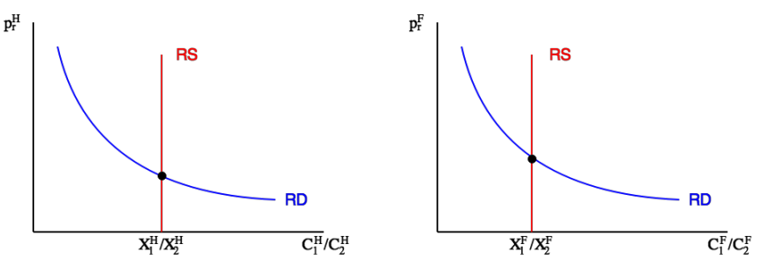
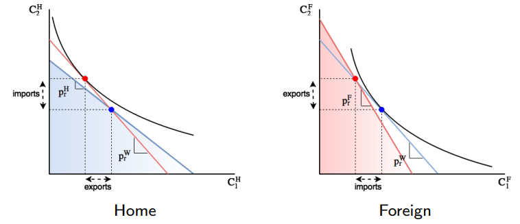
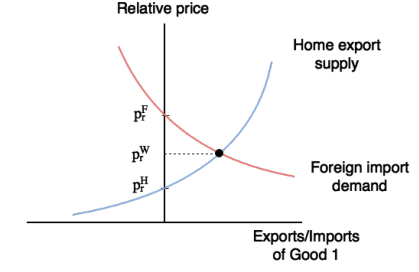

ECON2252 Lecture 2 (3)
对于小国而言，上节讨论的 SOE 模式是合理的。但对于大国之间的贸易，SOE 是否还适用呢？在这里，“大国”指的是国家之间的贸易可以影响世界市场价格。
两国模式（Two-country Model）
我们的假设如下：
- 考虑两个国家，Home 和 Foreign；
- 这两国拥有的禀赋依然是固定的：
- Home 拥有 $X_1^H$ 单位个商品 1 ，$X_2^H$ 单位个商品 2 .
- Foreign 拥有 $X_1^F$ 单位个商品 1 ，$X_2^F$ 单位个商品 2 .
- 这些禀赋依然是由两国中的代表性家庭持有；
- 这两国的代表性家庭消费偏好完全相同；
乍一看，好像我们的假设与之前并没有什么不一样的，但这里有一个关键区别：我们将为世界市场价格如何决定建模。
现在，Home 和 Foreign 之间被允许交易它们持有的禀赋，我们想要弄清楚的关键问题如下：
- 它们之间会交易吗？
- 它们分别会出口和进口哪种商品？
- 哪个国家会受益，哪个国家会吃亏？
- 有多少商品会被交易？又以什么价格？
想要回答上述问题，我们需要引入比较优势的概念，这是贸易理论中最基础的概念之一。
总的来说，对于一个国家，某个商品的自给自足相对价格小于世界相对价格，那么就说这个国家在该商品上有比较优势。
我们在接下来会看到，这个定义是非常通用的，即使相对价格在不同的模型中取决于不同的因素，但比较优势的概念却贯穿始终。
另一方面，这个定义可能看起来有些抽象：我们知道相对价格是内生的，那么，如何在不先求解模型的情况下确定比较优势呢？
从前面对封闭经济的分析中我们得知，自给自足下的相对价格取决于相对禀赋：
并且，在自给自足下，更高的相对禀赋会带来更低的相对价格：

所以，在两国模式中，我们就得到了比较优势的实际含义：
某国在某商品上拥有比较优势 ->
该商品的自给自足相对价格小于世界相对价格 ->
某国在该商品上的相对禀赋大于世界相对禀赋 ->
在该模型中我们只考虑两个国家 ->
所以等价于某国在该商品上的相对禀赋大于另一国的相对禀赋。
例子
设相对禀赋 $X_r=\frac{X_1}{X_2}$ ，如果 $X_r^H>X_r^F$ ，那么就说明 Home 在商品 1 上具有比较优势。
为了下一步分析，同时也是回答之前的问题，我们有必要介绍相对优势法则：
国家会出口它们拥有比较优势的商品。
这实际上很直观，更低的自给自足相对价格 $\approx$ 该商品并不那么稀缺。
Q1 Will the countries trade?
从上文对 SOE 的分析中我们得知，
- 如果 $p_r^H<p_r^H$ ，Home 就会出口商品 1 ，进口商品 2 ；
- 如果 $p_r^H>p_r^H$ ，Home 就会进口商品 1 ，出口商品 2 ；
- 同样的逻辑也适用于 Foreign 。
那么，为了得知它们之间究竟会不会贸易，我们也可以分情况来考虑。
Case 1 $p_r^H<p_r^W$ and $p_r^F<p_r^W$
在这种情况下，Home 和 Foreign 都会出口商品 1 ，进口商品 2 .
于是世界市场无法出清。
Case 2 $p_r^H>p_r^W$ and $p_r^F>p_r^W$
在这种情况下，Home 和 Foreign 都会出口商品 2 ，进口商品 1 .
于是世界市场依旧无法出清。
Case 3 $p_r^H<p_r^W<p_r^F$
在这种情况下，Home 会出口商品 1 ，进口商品 2 ；Foreign 会出口商品 2 ，进口商品 1 .
可以发现，这种情形下两国之间就可能发生贸易了。
我们还不能说一定会，因为我们还没有分析贸易是否会给两国都带来益处，只是贸易的土壤已经产生。
Case 4 $p_r^F<p_r^W<p_r^H$
在这种情况下，Home 会出口商品 2 ，进口商品 1 ；Foreign 会出口商品 1 ，进口商品 2 .
可以发现，这种情形下两国之间也可能发生贸易。
我们需要注意的是，情况 3 和 4 只有当 $p_r^H \neq p_r^F$ 时才成立。
从上面的情况分析中，我们可以得出，各国只有在以下条件满足时才可能进行贸易：
- 自给自足价格不同（即比较优势不同，不能在同一商品上都拥有比较优势）。
- 相对禀赋不同，即 $X_r^H \neq X_r^F$ 。
在这里，我们有必要区分相对优势与绝对优势，这样才不至于混淆什么情况下国家之间会进行贸易。
举个例子，我们假设
我们可以看到 Home 在两种商品上相比 Foreign 都拥有更多的禀赋，于是我们就可以说 Home 在两种商品上都拥有绝对优势。
但这意味着 Home 应该向 Foreign 出口这两种商品吗？答案是否定的，因为我们同样看到 $X_r^H=X_r^F=1$ 。也就是说，Home 和 Foreign 在比较优势上并没有区别，从我们的模型能够得知它们之间不会进行贸易。
为什么会这样呢？更多的禀赋究竟意味着什么？
实际上，Home 拥有比 Foreign 更多的禀赋仅仅意味着 Home 比 Foreign 更富有，所以它的消费更多。换句话来说，Home 的消费水平更高。我们前面提到假设两国的代表性家庭消费偏好完全相同，所以两国的相对消费也是完全一样的，因此没有必要进行贸易。
这里也可以结合前文的图来理解，相对禀赋相同就意味着相对价格也相同。既然价格都一样，那为什么还要去贸易呢？
Q2 Which country will export/import which good?
我们先看一种情况，假设 $X_r^H>X_r^F$ ，即 Home 的商品 1 和 商品 2 的相对丰富程度高于 Foreign 。
于是从前文的图我们能推导出 $p_r^H<p_r^F$ ，此时贸易可能发生，并且世界相对价格 $p_r^W\in (p_r^H,p_r^F)$ ，两国的比较优势如下：
- Home 在商品 1 上有比较优势；
- Foreign 在商品 2 上有比较优势。
所以，此时的贸易模式为：
- Home 出口商品 1 ，进口商品 2 ；
- Foreign 进口商品 1 ，出口商品 2 .
如果 $X_r^H<X_r^F$ 的话上述逻辑颠倒即可。
Q3 Which country will gain/lose from trade?
从 SOE 分析中，我们得到了一个结论：只要世界相对价格不等于自给自足相对价格，国家就始终能从贸易中获益。
这条结论同样适用于两国模式，两国都可以从贸易中获益。
我们依然沿用上文的假设，即 $X_r^H>X_r^F$ 。
对于 Home ：
- 开放贸易会提高商品 1 相对商品 2 的相对价格。
- Home 出口商品 1 ，进口商品 2 ，提升福祉。
对于 Foreign ：
- 开放贸易会提高商品 2 相对商品 1 的相对价格。
- Foreign 出口商品 2 ，进口商品 1 ，提升福祉。
对福祉的计算与 SOE 下给定 $p_r^W$ 相同。
Q4 How much will be traded and at what prices?
出口供给和进口需求都取决于世界相对价格 $p_r^W$ 。
举例来说，假设 $p_r^H<p_r^W<p_r^F$ ，那么有

当 $p_r^W$ 逐渐从 $p_r^H$ 到 $p_r^F$ 增大：
- Home 会同时增加商品 1 的出口和商品 2 的进口；
- Foreign 会同时降低商品 1 的进口和商品 2 的出口；
总之，$p_r^W$ 必须使得出口供给等于进口需求。例如，对商品 1 的市场来说，

Example of Two-country Model
我们依旧以前文的道格拉斯函数为例，即
现在，Home 和 Foreign 的预算限制如下：
其中 $p_r^W=\frac{p_1^W}{p_2^W}$ 。
还记得我们之前提到过的边际替代率，即 $MRS = \frac{\partial U}{\partial C_1} / \frac{\partial U}{\partial C_2}$ ，也就是效用函数曲线的斜率。当这个斜率等于预算线本身的斜率 $\frac{p_1}{p_2}$ 时，效用达到最优，因此我们有 Home 和 Foreign 的效用最佳条件：
此外，我们还有商品 1 和 2 分别的市场出清条件：
本质上来说，两国模式和自给自足模型最关键的不同就是商品市场出清是以世界市场计算，而不是两国各自单独出清。
从（3）和（4）中可见，两国的相对需求是相等的，都等于世界相对价格 $p_r^W$ ，所以我们可以得出世界相对需求
推导过程
从（3）和（4）中可得
于是有
原式可以化成
同时，世界相对供给为
从（5）和（6）中，我们将市场出清条件代入上式，得到
将（3）和（9）代入（1）式，化简可得 Home 的消费量
化简过程，以 $C_1^H$ 为例
原式为
可化成
从（3）中可得 $\frac{C_2^H}{C_1^H}=p_r^W$ ，从（9）中可得 $X_r^W=\frac{1}{p_r^W}$ ，代入上式可得
同理，将（4）和（9）代入（2）式，可得到 Foreign 的消费量
接着我们就能算出 Home 和 Foreign 商品 1 和 2 的出口（如为负数则是进口）量
具体推导步骤，以 $E_1^H$ 为例
这里我们统一用了 $E$ ，以正负号代表出口 $/$ 进口，是因为贸易模式取决于相对禀赋。
比如，若 $X_r^F
总之，两国模型描述了两国如何同时从贸易中获益，但我们还有一个疑问，禀赋是哪里来的？它对贸易有什么影响？在接下来的学习中，我们将回答这个问题，即 Ricardian 模型。